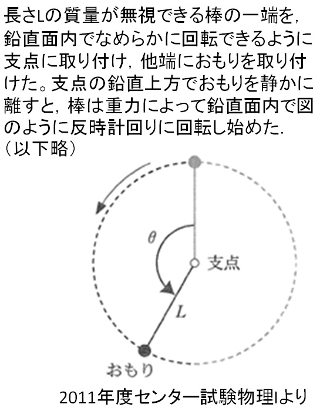
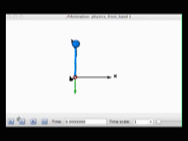
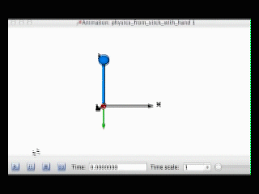
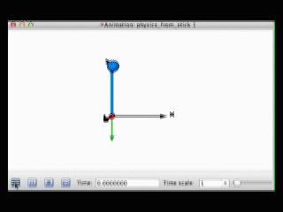
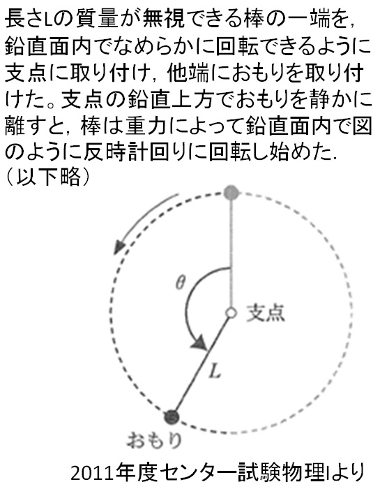
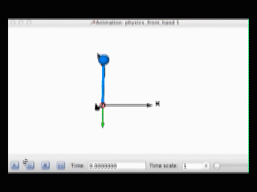
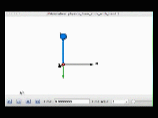
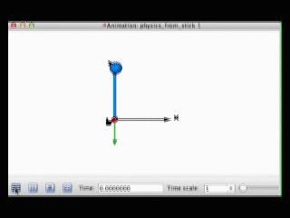

物理シミュレーションの応用の一つに，自然言語処理における曖昧性解消があります．例えば以下のような問題文を理解することを考えてみましょう．

こ の文章を人間が読んだ場合，当然のことながら「おもりを離す」とは，「手で持っていたおもりを手から離す」を意味しています．しかし，背景知識や常識を持 たない計算機の場合，(1)「手からおもりを離した」(2)「おもりを棒から離した．ただしおもりは手で持ったまま」(3)「おもりを手から離した．同時 におもりを棒から離した」という3種類の解釈の可能性があります．従来の自然言語処理ではこれらの3つの可能性から適切な解釈を選択することは困難でした が，それぞれの場合に将来何が起こるかを物理シミュレーションすることで曖昧性を解消することができます．以下に示すのはそれぞれのケースの物理シミュ レーションの結果です．問題文では「棒が回転した」と書かれており，図ではおもりが移動しているので，正しい解釈は(1)であることが分かります．


こ の文章を人間が読んだ場合，当然のことながら「おもりを離す」とは，「手で持っていたおもりを手から離す」を意味しています．しかし，背景知識や常識を持 たない計算機の場合，(1)「手からおもりを離した」(2)「おもりを棒から離した．ただしおもりは手で持ったまま」(3)「おもりを手から離した．同時 におもりを棒から離した」という3種類の解釈の可能性があります．従来の自然言語処理ではこれらの3つの可能性から適切な解釈を選択することは困難でした が，それぞれの場合に将来何が起こるかを物理シミュレーションすることで曖昧性を解消することができます．以下に示すのはそれぞれのケースの物理シミュ レーションの結果です．問題文では「棒が回転した」と書かれており，図ではおもりが移動しているので，正しい解釈は(1)であることが分かります．
